The Web
Categorie
Full Stack Development
Profiel Full Fledged Front End Web Developer
Een Front End Web Developer richt zich op de presentatielaag, meestal het gedeelte wat gebruiker ziet en mee interacteert, van website of App, of stuk web functionaliteit. Hierbinnen bedient developer zich met tools die in staat stellen om alles te maken wat zich nu al manifesteert, of er nog niet is, en dus moet worden bedacht of gemaakt.
Waar de scope van Basic Front End Web Developer is beschreven in dat profiel, hebben de woorden Full Fledged betrekking op "het hele werkveld" van front end development en daarvoor benodigde kennis, kunde en vaardigheden waaronder meer techniek en ook managerial aspecten.
→ zie: Wikipedia Front End Web Development
Taken
Profiel Basic Front End Web Developer wordt verondersteld. Voor Full Fledged komt erbij ontwikkelen alle front end Apps, eigen werk workflow management is optimaal, werken in teams en maken koppelingen naar back end API’s en werken met data. De Full Fledged Front End Web Developer beheerst navolgende tools adequaat om taken te kunnen verrichten.
- Bootstrap
-
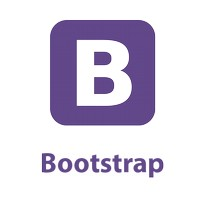 Bootstrap is een free open source software verzameling hulpmiddelen (framework) voor het maken van websites en webtoepassingen. Het bevat sjablonen gebaseerd op HTML en CSS voor typografie, formulieren, knoppen, navigatie en andere interfaceonderdelen. Het bevat ook JavaScript extensies. Het Bootstrap framework is bedoeld om webontwikkeling te vereenvoudigen.
→ zie: Wikipedia Bootstrap
→ zie: Website Bootstrap tbv downloadBootstrap stelt gebruiker in staat om "ready to go" snel resultaten te behalen, het geeft een goede stabiele "clean" design. Prima tool voor developer die werkt zonder User Experience (UX) designer en illustrator. Voor developer die zich focust op inhoud en business logics in de back end, met stroomlijning van CI/CD (continious integration en continious development) met testen enz. Bootstrap standaardiseert development en dat geeft in teamverband en later beheer van website of App een "one way of working" wat veel waard is.
Gebruik van Bootstrap zorgt voor overhead zodat gehele website of App qua kb's in omvang vele malen groter is dan development op basis van plain vanilla CSS. En dat zou kunnen leiden tot performance verlies vanwege loadtime. Om development met Bootstrap te stroomlijnen (to minify) is er tool PurgeCSS. En er is een tool Bower om niet gebruikte afhankelijkheden op te sporen en verwijderen. Specifiek voor NL is omvang cq mogelijke performance verlies niet zo'n issue want moderne technische infrastructuur zoals glasvezel enz. heeft hoge troughput capaciteit en veel zo niet alle gebruikers hebben moderne apparatuur.
- TypeScript
-
TypeScript (TS) is een free open source programmeer taal. Het is een strikte superset van JavaScript (JS), en voegt typing en object georiënteerd programmeren toe aan de JS. TS kan gebruikt worden voor de ontwikkeling van JS toepassingen voor client side of server side met runtime environment is Node.js.
→ zie: Wikipedia TypeScript
→ zie: Website TypeScript tbv downloadTS is ontworpen voor de ontwikkeling van grote toepassingen en transcompileert naar JS. Omdat het een superset is van JS, is elk bestaand JS programma automatisch ook een geldig TS programma. TS ondersteunt klassen volgens ECMAScript 2015.
- ESLint
-
ESLint is een code analyse tool voor het identificeren van problematische patronen in JavaScript code. Rules in ESLint zijn configureerbaar en aangepaste rules kunnen worden gedefinieerd en geladen. ESLint behandelt zowel code technische kwaliteit als code stijl.
→ zie: Wikipedia ESLint
→ zie: Website ESLint get startedESLint ondersteunt de huidige standaarden van ECMAScript en experimentele syntaxis van concepten voor toekomstige standaarden. Code met behulp van JSX of TypeScript kan ook worden verwerkt wanneer betreffende plugin of transpiler wordt gebruikt.
ESLint kan worden geinstalleerd via Node.js als plugin bij VS Code en gebruikt worden bij development in library React, en frameworks Vue.js en Angular en andere omgevingen.
→ zie: YouTube Videotorial ESLint
- Prettier
-
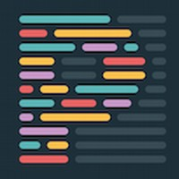 Prettier is een code formatter. Het dwingt een consistente stijl af door code te parseren en opnieuw af te drukken met in tool gedefinieerde regels die rekening houden met bijvoorbeeld de maximale regellengte en doet aan 'woord afbreken' indien nodig, en nog veel meer code opmaak kenmerken.
→ zie: GitHub Prettier
→ zie: Website Prettier get startedPrettier kan worden uitgevoerd in je editor bij het opslaan, in een pre commit hook of als onderdeel van DevOps in continious integration (CI) omgeving om ervoor te zorgen dat codebase een consistente stijl heeft waardoor code reviewers en -testers hun taken vereenvoudigd. Prettier kan worden geinstalleerd via Node.js als plugin bij VS Code en gebruikt worden bij development in library React, en frameworks Vue.js en Angular en andere omgevingen.
Navolgend onder Prettier tutorial staat 2e Prettier video en die betreft installatie richtlijnen, want dat is nodig bij gebruik in combinatie met hiervoor genoemd ESLint. Immers, ESLint heeft soortgelijke, naar dan net even anders, opmaak functies in zich en het is de bedoeling dat ESLint versus Prettier elkaar niet in de weg zitten cq contradicties bevatten. Dus waar ESLint de code technisch kan managen kan Prettier de looks van code managen.
→ zie: YouTube Videotorial Prettier
→ zie: YouTube Videotorial installatie richtlijnen Prettier icm ESLint - Webpack
-
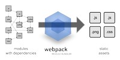 Webpack is een free open source JavaScript modulebundler. Naast JavaScript kan het ook front end assets zoals HTML, CSS en afbeeldingen bundelen met bijbehorende plugins. Webpack verpakt afzonderlijke modules en hun afhankelijkheden en plugins en genereert gesorteerd naar tool een vaste bundel als één geheel.
→ zie: Wikipedia Webpack
→ zie: Website Webpack get startedWebpack kan worden geinstalleerd via Node.js en biedt ook een ingebouwde ontwikkeling server genaamd Webpack Dev Server die kan worden gebruikt als een HTTP server voor het aanbieden van bestanden tijdens het ontwikkelen. Het biedt ook de mogelijkheid om hot module vervanging te gebruiken.
- JavaScript coding bundles
-
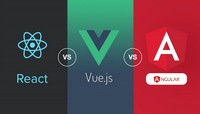 Frameworks zijn gericht op het faciliteren van software ontwikkelingen door ontwerpers en programmeurs in staat te stellen hun tijd te besteden aan het voldoen aan softwarevereisten in plaats van te werken met de meer standaard details op laag niveau van het bieden van een werkend systeem, waardoor de algemene ontwikkeltijd wordt verkort. Ook in teamverband is het naast snelheid ook voor de uniformatiteit wenselijk dat ieder developer teamlid gelijke framework gebruikt.
Zodra een framework is geleerd kunnen toekomstige projecten sneller en gemakkelijker worden voltooid. Het concept van een framework is om een one size fits all oplossing en met kennis van framework, zal de code productie logischerwijs stijgen. Het is daarom dat werkgevers een groot belang hechten aan tooling van eigen bedrijf én of werknemer cq developer die eenmaal gekozen tooling beheerst om zich zodoende 'eenvoudig' naar werkwijze van team te voegen mét one way of working.
In onderstaande tabel staan drie meest belangrijke JavaScript coding bundles, zijnde React, Vue en Angular. En elke bundle bestaat uit drie delen, te weten Front End, Back End en State Management.
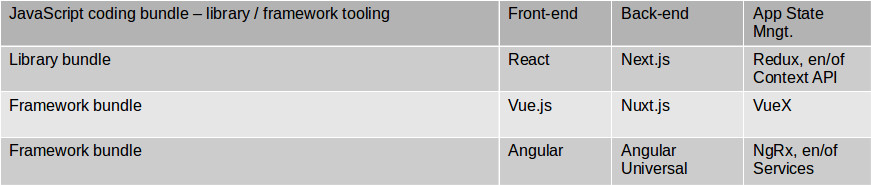Omdat het leren en beheesen van een bundle veel tijd vergt is het niet handig om als beginner developer alle drie de bundles tegelijk in een keer ter hand te nemen. Aldus de vraag welke van de drie bundles te leren? Qua installed user base en dus job opportunities is keuze primair React. Als het accent ligt op innovatief dan is secondair Vue, wat min of meer bestaat uit het beste van React gecombineerd met het beste van Angular; behalve dan dat er (nog) weinig werkgevers deze tool vragen. En derde keus (qua installed user base 2e) is Angular, en is prima en ligt technisch dicht bij 'in deze guide hier voorafgaand' met HTML, CSS etc.
→ zie: YouTube Infotorial welke JS coding bundle kiezen
Hiernavolgend de uitwerking van alle drie de JS coding bundles. Het is voor beginner developer aan te bevelen om één van de drie mogelijkheden te kiezen om vervolgens zich daarin te verdiepen en gekozen omgeving te leren en beheersen.
- React Library - Front End - Bundle 1
-
React ook bekend als React.js of ReactJS is een JavaScript bibliotheek voor het bouwen van gebruiker interfaces. Het wordt onderhouden door Facebook en een gemeenschap van individuele ontwikkelaars en bedrijven.
→ zie: Wikipedia React
→ zie: Website React get started
→ zie: Website Firefox Addon React developer toolReact ondersteunt het Single Page App concept (SPA) wat betekent dat de webpagina interacteert met gebruiker met dynamisch waarden herschrijven in de pagina waar op dat moment naar gekeken wordt, in plaats van telkenmale vernieuwen van een pagina om na een ingave. SPA is ook prima voor mobiele toepassingen, omdat het optimaal is voor het ophalen van snel veranderende gegevens die moeten worden vastgelegd.
Het ophalen van gegevens is echter slechts het begin van wat er op een webpagina gebeurt. Daarom vereisen complexe React toepassingen meestal het gebruik van extra bibliotheken voor statusbeheer, routing en interactie met een API. Redux, React Router en Axios zijn voorbeelden van dergelijke bibliotheken.
→ zie: YouTube Videotorial React
- Next.js - Back End - Bundle 1
-
Next.js is een framework voor server side rendering van React (JavaScript). Oftewel, een HTML pagina wordt in geheel, dus statisch gedeelte PLUS variabele gedeelte, op de server opgemaakt en alsdan compleet naar de client side gestuurd.
→ zie: Website Next.js get started
→ zie: YouTube Infotorial Next.js for React Server side renderingNext.js kenmerken zijn: weergegeven, automatische codesplitsing voor sneller laden van pagina's, simple client side routing (pagina gebaseerd), Webpack gebaseerde ontwikkelomgeving die Hot Module Replacement (HMR) ondersteunt, kan worden geimplementeerd met Express of een andere Node.js HTTP-server, aanpasbaar met eigen Babel- en Webpack configuratie.
→ zie: YouTube Videotorial Next.js
- Redux - App State Mngt - Bundle 1
-
Redux is een free open source JavaScript bibliotheek voor het beheren van de App status. Het wordt meestal gebruikt met bibliotheken zoals React of Angular voor het bouwen van gebruikersinterfaces. Een door Redux beheerd UI besturingselement, zoals een knop, bevindt zich bijvoorbeeld in de ingeschakelde status wanneer invoervelden geldige invoerwaarden hebben en de knop is uitgeschakeld wanneer de invoervelden leeg zijn of ongeldige waarden hebben.
→ zie: Wikipedia App State management
→ zie: Wikipedia Redux
→ zie: Website Redux get startedRedux is een kleine bibliotheek met een eenvoudige, beperkte API die is ontworpen als een voorspelbare container voor de App status. Het werkt op dezelfde manier als een reducerende functie, een functioneel programmeerconcept. Het is beïnvloed door de functionele programmeertaal Elm.
- Ionic - Progressive webApp - geschikt voor Bundle 1+2+3
-
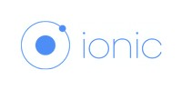 Hybride progressive webApp (PWA) is om tijd en geld te besparen de R&D trend richting native hybride Apps met tooling combinaties en daarbovenop wrapper (Ionic) die ontwikkelde App bundelt en “een OS-versie genereert”. Een PWA App wrapped met Ionic kan draaien op Android, iOS, Windows10, macOS, Linux, Unix en Blackberry10 (alleen icm framework React).
→ zie: Wikipedia Ionic
→ zie: Website Ionic get startedProgressive webApps zijn ontworpen om te werken in elke browser die voldoet aan webstandaarden. Als gevolg hiervan kunnen ontwikkelaars gemakkelijker platform onafhankelijke Apps bouwen dan met native Apps.
→ zie: YouTube Infotorial Ionic gebruiken ja/nee?
→ zie: YouTube Videotorial Ionic met React - Vue.js Framework - Front End - Bundle 2
-
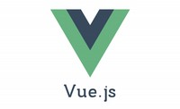 Vue is een JavaScript framework voor het bouwen van gebruiker interfaces. Het wordt onderhouden door een gemeenschap van individuele ontwikkelaars en bedrijven.
→ zie: Wikipedia Vue.js
→ zie: Website Vue.js get started
→ zie: Website Firefox Addon Vue.js developer toolVue.js ondersteunt het Single Page App concept (SPA) wat betekent dat de webpagina interacteert met gebruiker met dynamisch waarden herschrijven in de pagina waar op dat moment naar gekeken wordt, in plaats van telkenmale vernieuwen van een pagina na een ingave. SPA is ook prima voor mobiele toepassingen, omdat het optimaal is voor het ophalen van snel veranderende gegevens die moeten worden vastgelegd.
Vue.js beschikt over een stapsgewijs aan te nemen architectuur die zich richt op declaratieve rendering en componentcompositie. Geavanceerde functies die vereist zijn voor complexe applicaties zoals routing, statusbeheer en build-tooling worden aangeboden via officieel onderhouden ondersteunende bibliotheken en pakketten, met Nuxt.js in de back end als een van de meest populaire oplossingen.
→ zie: YouTube Videotorial Vue.js
- Nuxt.js - Back End - Bundle 2
-
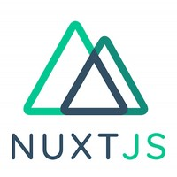 Nuxt.js is een framework voor server side rendering van Vue.js (JavaScript). Oftewel, een HTML pagina wordt in geheel, dus statisch gedeelte PLUS variabele gedeelte, op de server opgemaakt en alsdan compleet naar de client side gestuurd.
→ zie: Wikipedia Nuxt.js
→ zie: Website Nuxt.js get startedNext.js kenmerken zijn: weergegeven, automatische codesplitsing voor sneller laden van pagina's, simple client side routing (pagina gebaseerd), Webpack gebaseerde ontwikkelomgeving die Hot Module Replacement (HMR) ondersteunt, kan worden geimplementeerd met Express of een andere Node.js HTTP-server, aanpasbaar met eigen Babel- en Webpack configuratie.
→ zie: YouTube Videotorial Next.js
- Vuex - App State Mngt - Bundle 2
-
Vuex is een free open source JavaScript bibliotheek voor het beheren van de App status. Het wordt meestal gebruikt met framework Vue.js voor het bouwen van gebruikersinterfaces. Een door Vuex beheerd UI besturingselement, zoals een knop, bevindt zich bijvoorbeeld in de ingeschakelde status wanneer invoervelden geldige invoerwaarden hebben en de knop is uitgeschakeld wanneer de invoervelden leeg zijn of ongeldige waarden hebben.
→ zie: Wikipedia App State management
→ zie: GitHub Vuex
→ zie: Website Vuex get startedVueX dient als een gecentraliseerde beheerder voor alle componenten in een App, met regels die ervoor zorgen dat de staat alleen op een voorspelbare manier kan worden gemuteerd. Het integreert ook met Vue's officiële devtools extensie om geavanceerde functies te bieden, zoals zero config time travel debugging en status snapshot export en import.
- Ionic - Progressive webApp - geschikt voor Bundle 1+2+3
-
Hybride progressive webApp (PWA) is om tijd en geld te besparen de R&D trend richting native hybride Apps met tooling combinaties en daarbovenop wrapper (Ionic) die ontwikkelde App bundelt en “een OS-versie genereert”.
→ zie: YouTube Infotorial Ionic gebruiken ja/nee?
→ zie: YouTube Videotorial Ionic met Vue.js - Angular Framework - Front End - Bundle 3
-
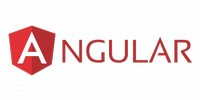 Angular is een framework voor het bouwen van gebruiker interfaces in de taal JavaScript of taal zoals TypeScript die gecompileerd kan worden naar JavaScript. Het wordt onderhouden door een gemeenschap van individuele ontwikkelaars en bedrijven.
→ zie: Wikipedia Angular
→ zie: Website Angular get started
→ zie: Website Firefox Addon Angular developer toolAngular ondersteunt het Single Page App concept (SPA) wat betekent dat de webpagina interacteert met gebruiker met dynamisch waarden herschrijven in de pagina waar op dat moment naar gekeken wordt, in plaats van telkenmale vernieuwen van een pagina na een ingave. SPA is ook prima voor mobiele toepassingen, omdat het optimaal is voor het ophalen van snel veranderende gegevens die moeten worden vastgelegd.
Angular combineert declaratieve sjablonen, afhankelijkheidsinjectie, end to end tooling en integreert best practice om knelpunten tijdens de ontwikkelingsfase op te lossen. Angular stelt ontwikkelaars in staat om applicaties te bouwen voor internet, mobiel of de desktop.
→ zie: YouTube Videotorial Angular
- Angular Universal - Back End - Bundle 3
-
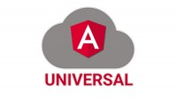 Angular Universal is een framework voor server side rendering van Angular (JavaScript). Oftewel, een HTML pagina wordt in geheel, dus statisch gedeelte PLUS variabele gedeelte, op de server opgemaakt en alsdan compleet naar de client side gestuurd.
→ zie: GitHub Angular Universal
→ zie: Website Angular Universal get started - NgRx - App State Mngt - Bundle 3
-
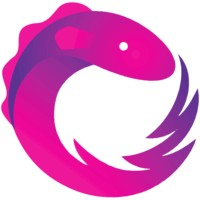 NgRx is een free open source JavaScript bibliotheek voor het beheren van de App status. Het wordt meestal gebruikt met framework Angular voor het bouwen van gebruikersinterfaces. Een door NgRx beheerd UI besturingselement, zoals een knop, bevindt zich bijvoorbeeld in de ingeschakelde status wanneer invoervelden geldige invoerwaarden hebben en de knop is uitgeschakeld wanneer de invoervelden leeg zijn of ongeldige waarden hebben.
→ zie: Wikipedia App State management
→ zie: GitHub NgRx
→ zie: Website NgRx get startedNgRx dient als een gecentraliseerde beheerder voor alle componenten in een App, met regels die ervoor zorgen dat de staat alleen op een voorspelbare manier kan worden gemuteerd.
- Ionic - Progressive webApp - geschikt voor Bundle 1+2+3
-
Hybride progressive webApp (PWA) is om tijd en geld te besparen de R&D trend richting native hybride Apps met tooling combinaties en daarbovenop wrapper (Ionic) die ontwikkelde App bundelt en “een OS-versie genereert”.
→ zie: YouTube Infotorial Ionic gebruiken ja/nee?
→ zie: YouTube Videotorial Ionic met Angular - GraphQL en Apollo
-
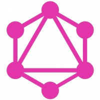 GraphQL is een free open source dataquery en manipulatietaal voor API's en een runtime voor het vervullen van queries met bestaande data. Het biedt een efficiënte, robuuste en flexibele benadering voor het ontwikkelen van web API's en is wezenlijk anders dan werken met REST API's.
→ zie: Wikipedia GraphQL
→ zie: Website GraphQL get startedHiermee kunnen clients de structuur van de vereiste gegevens definiëren en dezelfde structuur van de gegevens worden geretourneerd door de server, waardoor wordt voorkomen dat overmatig grote hoeveelheden gegevens worden geretourneerd. Maar dit heeft gevolgen voor hoe effectief webcaching van queryresultaten kan zijn. De flexibiliteit en rijkdom van de zoektaal voegt ook complexiteit toe die misschien niet de moeite waard is voor eenvoudige API's. Het bestaat uit een type systeem, query taal en uitvoering semantiek, statische validatie en type introspectie.
Apollo Client is een complete bibliotheek voor statusbeheer voor JavaScript Apps. Schrijf eenvoudig een GraphQL query en Apollo Client zorgt voor het opvragen en opslaan van gegevens en voor het bijwerken van gebruikersinterface. Het ophalen van gegevens met Apollo Client helpt bij het structureren van code op een voorspelbare, declaratieve manier die consistent is met moderne Apps best practices. Met Apollo kan sneller hoogwaardige functies worden gebouwd zonder gedoe.
→ zie: Website Apollo get started→ zie: YouTube Videotorial GraphQl